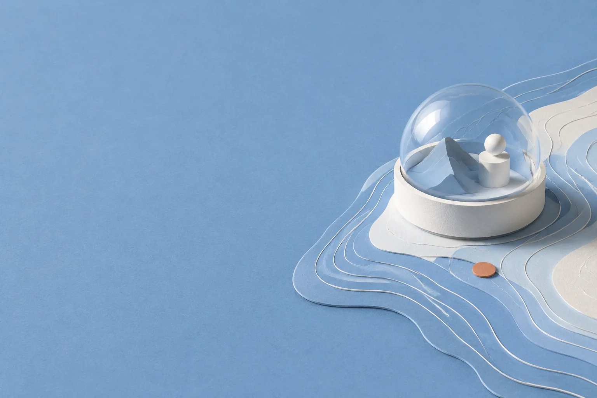
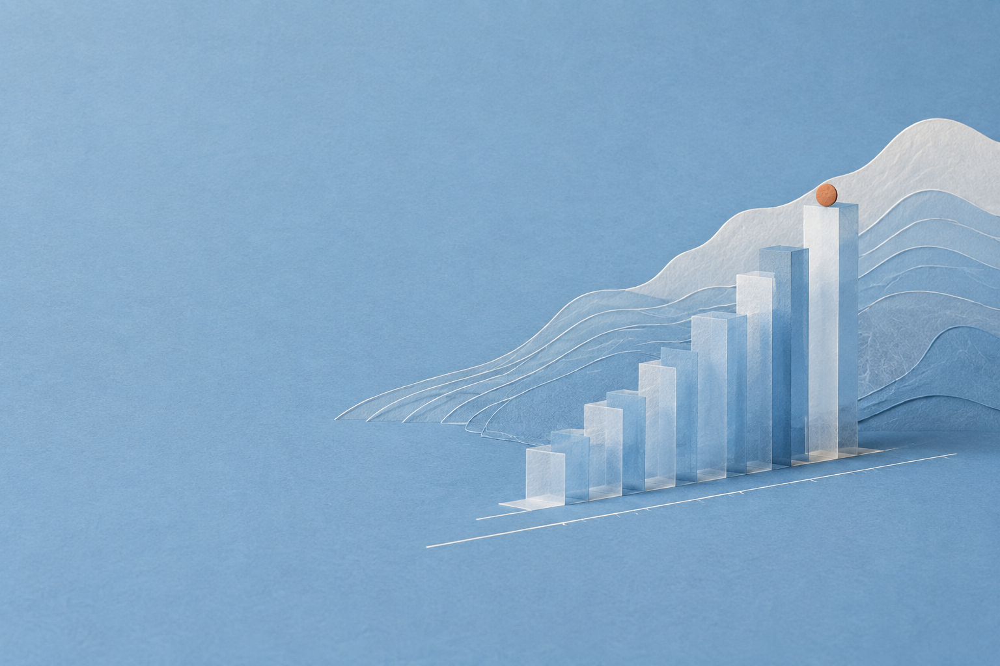
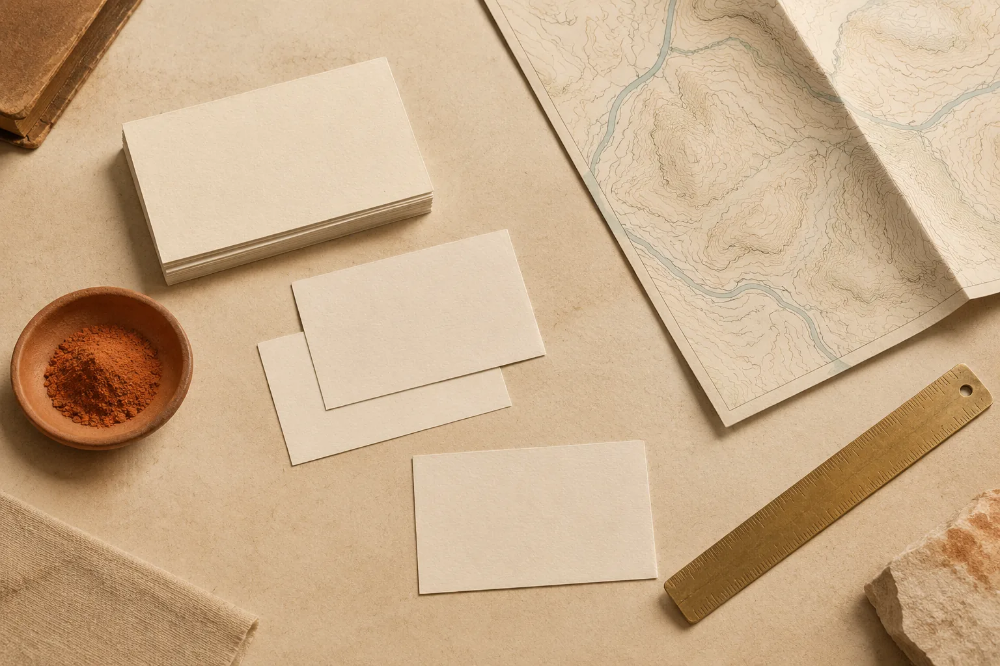

Archive Deck · 04 March 2026 · V 1.0
One fictional archive, read three ways: noon blue, night ink, morning paper. A demonstration of the Fable 5.1 theme workflow.

Noon · the public recordOpen, calm, scan-friendly. The reading you give a stranger at midday.
[04] · Invented catalogue counts, 2026

Every figure on this slide is invented for the study. The accent bar colour follows the active mode.
The archive is a grammar, not a colour scheme.
Filed under style studies
[06] Colophon. Demonstration deck for the open-source skill claude-fable-5-1-theme-workflow. Colour states are an independent extraction from publicly visible page behaviour; no Anthropic fonts, logos, illustrations, or source code are used. All names, figures, and the Tidewater Archive itself are fictional. Hero imagery: original GPT Image 2 concept art — unofficial assets, not evidence. Type set in Georgia, Arial, and ui-monospace fallbacks.